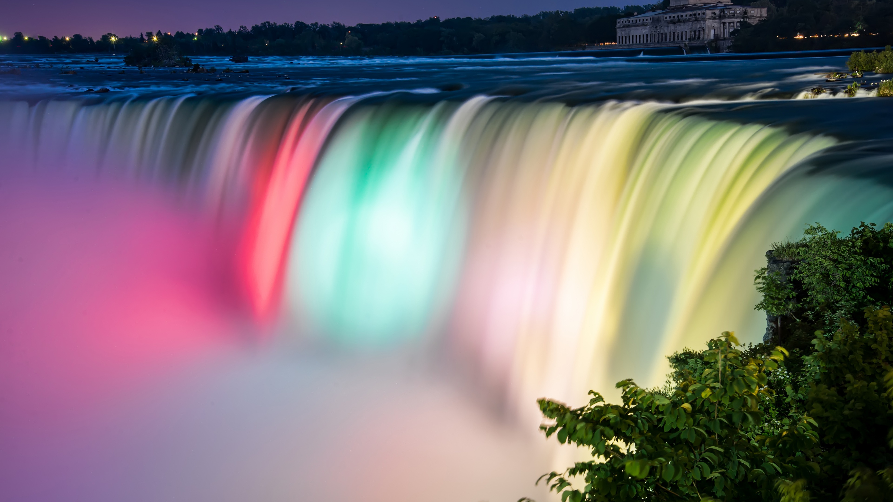
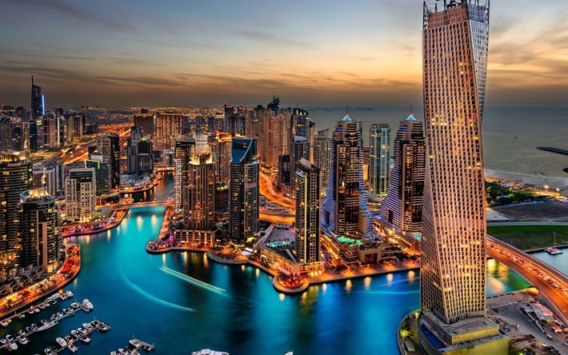
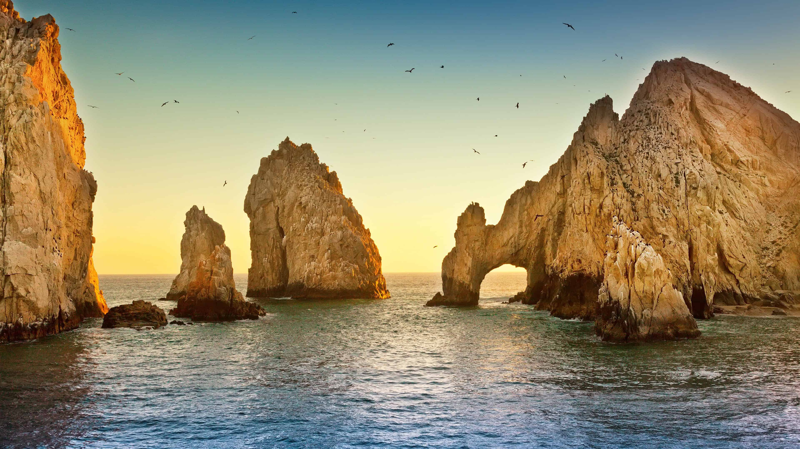
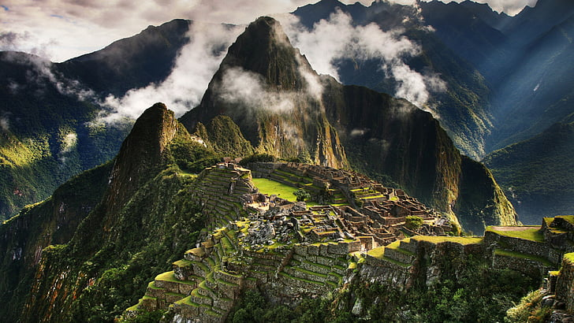
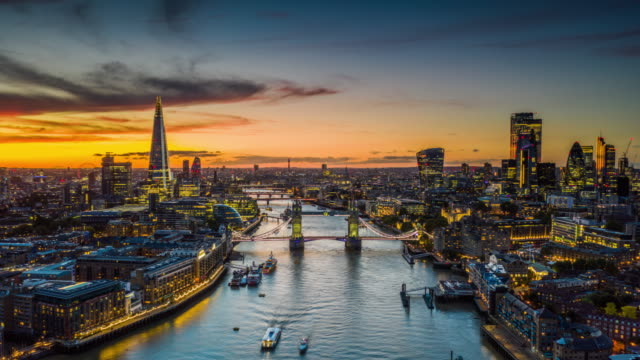

Airlines
¡Viaja con nosotros!

¡Deleita tus ojos con una edición festiva de la popular gira de iluminación nocturna de las Cataratas del Niágara!
Durante este recorrido, vea las Cataratas del Niágara iluminadas como un paraíso invernal por la noche durante la temporada navideña.
Vea la maravilla iluminada desde múltiples puntos de vista desde el anochecer mientras las Cataratas del Niágara se iluminan en una variedad de colores.
Podrá ver las cataratas desde Luna Island, ubicada entre Goat Island y Niagara Falls State Park, Terrapin Point, ubicado en la punta de Goat Island junto a
Canadian Falls, y Prospect Point Observation Tower.

La Riviera Maya nunca dejará de sorprenderte...Con sus más de 120 km de extensión,
sus cristalinas aguas color turquesa, sus playas de arena blanca, cenotes,
majestuosos sitios arqueológicos, parques naturales y temáticos únicos en el mundo,
además de magníficos hoteles y una, exquisita gastronomía.
¡Ven y descubre por qué en la Riviera Maya... el paraíso es para SIEMPRE!

Dubái es una ciudad emirato de los Emiratos Árabes Unidos conocida por su lujoso comercio,
la arquitectura ultramoderna y su vida nocturna animada.
Burj Khalifa, una torre de 830 m de alto, domina el paisaje lleno de rascacielos.
A sus pies se encuentra la Fuente de Dubái, con coreografías de chorros y luces al ritmo de la música.
En las islas artificiales justo frente a la costa están Atlantis, la Palma,
un centro turístico con agua y parques de animales marinos.

El Arco es el ícono distintivo de Cabo San Lucas, es una formación
rocosa que surge del mar en la punta de la Península de Baja California Sur,
donde el Océano Pacífico se encuentra con el Mar de Cortés. También conocido
como el “Fin de la Tierra”, El Arco es la atracción turística más popular y el
foco central de innumerables fotos de quienes visitan Los Cabos. Puedes llegar
a este lugar en distintos tipos de embarcaciones y disfrutar de colonias de leones marinos,
así como practicar actividades acuáticas como paddleboard.

Situada detrás de la catedral de Notre-Dame de París, la plaza Jean XXII es un remanso de paz.
Cuenta con varios bancos y árboles para ayudarte a tomar un descanso relajante o disfrutar de un bocadillo,
lejos del bullicio de los lugares turísticos. La magnífica vista del ábside de la catedral es una de las
ventajas de esta plaza.

Machu Picchu es una ciudadela inca ubicada en las alturas de las montañas
de los Andes en Perú, sobre el valle del río Urubamba. Se construyó en el
siglo XV y luego fue abandonada, y es famosa por sus sofisticadas paredes de
piedra seca que combinan enormes bloques sin el uso de un mortero, los edificios
fascinantes que se relacionan con las alineaciones astronómicas y sus vistas panorámicas.
El uso exacto que tuvo sigue siendo un misterio.

Ciudad de México es la densamente poblada capital de México que se encuentra a gran altura.
Es famosa por su Templo Mayor (un templo azteca del siglo XIII), la Catedral Metropolitana
de México, de estilo barroco, de los conquistadores españoles y el Palacio Nacional, que alberga
murales históricos de Diego Rivera. Todos estos hitos se ubican en torno a la Plaza de la Constitución,
la enorme plaza principal conocida también como el Zócalo.

Londres, la capital de Inglaterra y del Reino Unido, es una ciudad del siglo XXI
con una historia que se remonta a la época romana. En su centro se alzan el imponente
Palacio del Parlamento, la torre del icónico reloj "Big Ben" y la Abadía de Westminster,
lugar de las coronaciones monárquicas británicas. Al otro lado del río Támesis, la rueda
de observación London Eye ofrece vistas panorámicas del complejo cultural South Bank y
de toda la ciudad.